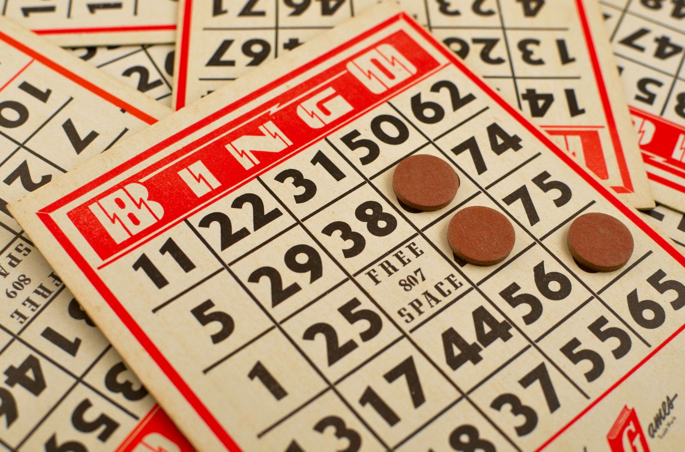

Bingo · Shoreditch
Hijingo, Shoreditch
- Immersive bingo with lasers, a host and a light show, run as timed shows rather than open play.
- £10 to £24 a person for game entry, priced by show slot.
- As cheap as £10 on Sunday, most other days slots are £16 or £24.
- Closed on Mondays.

Photo: Edwin Torres / Wikimedia Commons, CC BY 2.0
What is Hijingo?
Hijingo is bingo rebuilt as a production. You sit at a table with an electronic ticket while a host runs the game over a light and laser show, with six rounds building toward escalating prizes, including cash jackpots and holidays. It's the most passive activity in this set and the most theatrical.
The main room seats up to 185 guests. It's a single site, in Shoreditch, and closed on Mondays.
How does it work?
You book a seat at a specific show time rather than an open slot, so arrive at least 15 minutes early; the Lucky Cat Bar opens an hour before the first show of the day if you want to get there sooner. A standard session runs for around two hours across six rounds.
Groups of 15 or more can book the Neko Box, a raised semi-private area with the best view of the stage. If your group is booking as separate parties and wants to sit together, contact Hijingo at least 48 hours ahead; they'll try to accommodate it but can't guarantee it.
How much does it cost?
The table below shows what you can generally expect to pay; the exact price depends on which show you book.
| Day | Rate |
|---|---|
| Monday | Closed |
| Tuesday | £16 |
| Wednesday | £16 or £20 |
| Thursday | £16 to £20 |
| Friday | £16 or £20 |
| Saturday | £16 or £24 |
| Sunday | £10 to £16 |
Game entry per person. Verified 5 September 2026.
What is the food and drink like?
Food covers bar bites, burgers, baos and fries, roughly £5 to £16 depending on what you order, alongside a full cocktail list; plant-based, vegetarian and non-gluten options are marked on the menu, though the non-gluten dishes aren't suitable for coeliacs owing to the risk of cross-contamination. It's separate from the game-entry price, though it can be bundled into a package — see our FAQs below for prices. See the full food and drinks menu for the complete list.
How do you get there?
Get directions on Google Maps ↗
Shoreditch. Old Street on the Northern line and Liverpool Street on the Central, Circle and mainline services both work, with Shoreditch High Street on the Overground as a third option. Good for a group coming from the City or the east.
How do you book?
Book online through Hijingo's own site, choosing a specific show time; because seats are sold against a show rather than an open slot, popular Saturday shows sell out early. Game entry is debit card only, since Hijingo is licensed by the Gambling Commission and credit cards can't be used for the game stake, though food and drink can be paid by card as normal.
Full venue hire and private events go through a separate, contract-based process with Hijingo's events team.
Common questions
- How much is Hijingo?
- £10 to £24 per person for game entry, depending on the show. Sunday is the cheapest day, with some shows as low as £10; Tuesday is a flat £16 all day, and Saturday evenings are £24.
- Is Hijingo open on Mondays?
- No, it's closed on Mondays.
- What is the cheapest time to go?
- Sunday, when some shows drop to £10, the cheapest slot at Hijingo. Tuesday is a flat £16 all day, and on a Saturday, the 12:30 and 22:30 shows are £16 rather than £24.
- Does the ticket include food?
- No, game entry is separate from food and drink. Birthday packages start from £22 per person, party packages from £32, and Bottomless Brunch runs £35 to £49.
- How long is a show?
- Around two hours for a standard session of six rounds.
- Where is Hijingo?
- Shoreditch, walkable from Old Street, Liverpool Street and Shoreditch High Street.
- What prizes can you win at Hijingo?
- Depending on the game and session, prizes can include cash prizes of up to £5,000, holidays for two, merch or tech prizes, and other exciting prizes throughout the year.
You might also like
Similar venues in London
Spotted something wrong on this page: a price, an opening time, a fact that's changed? Tell us and we'll check it.